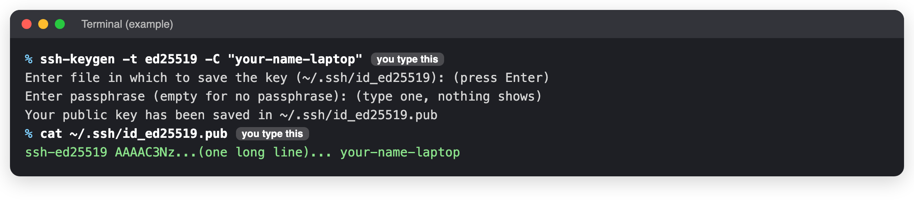
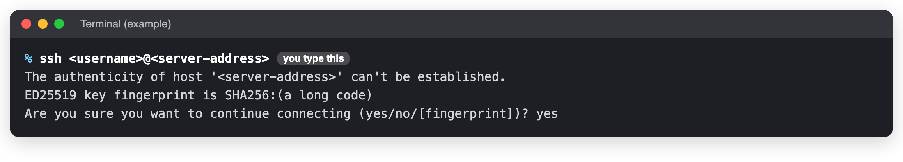
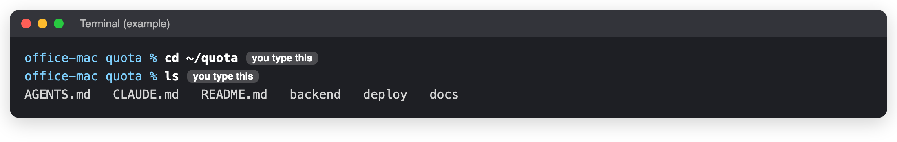

Connect to the server
When to use this: A page says "on the office Mac", and you are not sitting at it. Time it takes: 5 minutes (the first time: 15) You need: Your own computer, to be in the office (or on the office VPN), and the server address and your username from the person who manages the server.
If you are sitting at the office Mac, skip to Go to the Quota folder.
The address and username are not on this site
This site is public. Ask the developer, or look in the team password manager. Below, replace
<username> and <server-address> with what they give you.
The first time only: make your key
A key is how the Mac knows it is you. You make it once on your own computer.
- Open the Terminal on your own computer. On a Mac: ⌘ Space, type
Terminal, press Return. On Windows: open PowerShell from the Start menu. -
Copy this, paste it, press Return:
ssh-keygen -t ed25519 -C "your-name-laptop" -
It asks where to save: press Return. It asks for a passphrase: type one you will remember, press Return, then type it again. Nothing shows while you type. That is normal.
-
Show your key:
cat ~/.ssh/id_ed25519.pub
-
Copy the whole line that starts with
ssh-ed25519and send it to the person who manages the server. Wait until they say it has been added.
Only ever send the line from the file ending in .pub
The other file, without .pub, is your private key. Never send it or paste it anywhere.
Every time: connect
-
In the Terminal on your own computer:
ssh <username>@<server-address> -
The first time only, it asks Are you sure you want to continue connecting? Type
yesand press Return.
-
Type your key's passphrase if it asks. You are now typing on the office Mac.
Go to the Quota folder
Every command on this site is typed in the Quota folder.
cd ~/quota
ls

You should see
backend, deploy and docs in the list. If you do, you are in the right place.
When you are done
Type exit and press Return. The connection closes.
If you see something else
| You see | Do this |
|---|---|
Connection timed out |
You are not in the office or on the VPN, or the Mac is off. |
Connection refused |
The address is wrong, or remote login is off on the Mac. Ask the developer. |
Permission denied (publickey) |
Your key was not added yet, or the username is wrong. |
REMOTE HOST IDENTIFICATION HAS CHANGED |
Stop. Do not type yes. Ask the developer. |
No such file or directory after cd ~/quota |
You are connected to the wrong machine or user. Ask the developer. |
Stay safe
- Use only your own key. If your laptop is lost, tell the server manager at once so your key is removed.
- Do not run commands you do not understand. Never run
docker compose down -vordocker volume prune.
Last checked: 2026-11-11